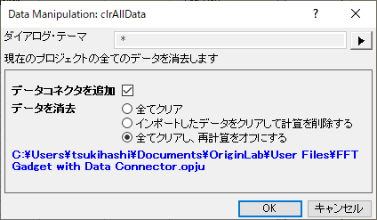
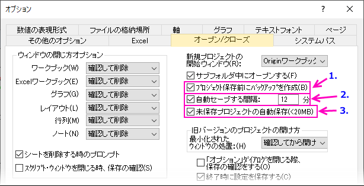
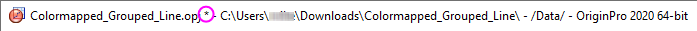
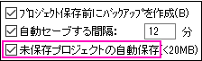
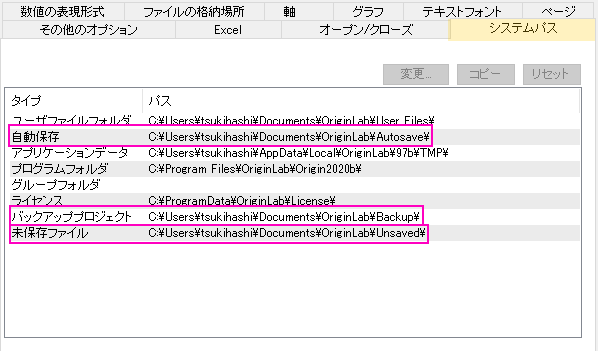
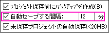
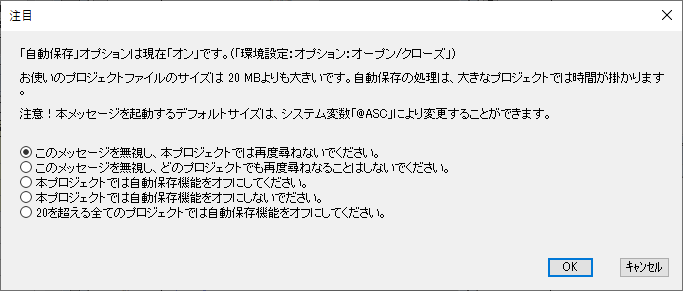
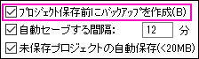
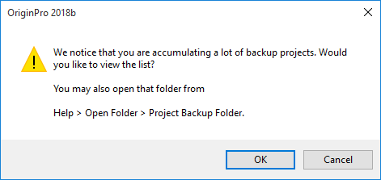

Originのプロジェクトファイルを開く、閉じる、バックアップする
OPJ-Open-Close-Backup
プロジェクトファイルを開く
- メニューからファイル：開くを選びます。ファイルの種類は、Originファイル (*.opju, *.opj, .og?, *.ot?)であることを確認してください。プロジェクトファイルを選択して、開くをクリックします。これで現在のワークスペースの全てを閉じて、選択したプロジェクトファイルをロードします。現在のプロジェクトへの変更を保存していない場合、Originはファイルを保存するか尋ねます。
- メニューからファイル：プロジェクトの追加を選びます。複数のプロジェクトファイルを選択できます。選択したプロジェクトファイルは現在のワークスペースに追加されます。サブフォルダとして現在のフォルダに追加するか、現在のプロジェクトエクスプローラのフォルダに直接追加するかを尋ねられます。Note: 子ウィンドウの名前は、プロジェクト内で同じ名前がないようにする必要があります。追加OPJに含まれた子ウィンドウは名前が付けなおされます。
- WindowsエクスプローラからプロジェクトファイルをOriginのワークスペースにドラッグアンドドロップします。ワークスペースがデフォルトのUntitledワークスペースの場合、この操作は、ファイル：開くと同様です。ワークスペースに名前のついたプロジェクトファイルを開いている場合、ドロップしたプロジェクトファイルは既存のワークスペースに追加されますので、(a)新しいフォルダを作成するか、(b)現在のフォルダに追加するかを選択します。
- Windowsエクスプローラのプロジェクトファイルをダブルクリックすると、新規でロードしたプロジェクトファイルが開きます。
プロジェクトファイルを保存
- ファイル: プロジェクトの保存を選択するか、標準ツールバーのプロジェクト保存
 をクリックします。これで、現在のワークスペースにあるすべてをOriginワークスペースタイトルバーに表示されているファイル名で保存できます。Note: プロジェクトファイルを保存する時にアクティブなプロジェクトエクスプローラフォルダは、開いているプロジェクトファイルのフォルダになります。
をクリックします。これで、現在のワークスペースにあるすべてをOriginワークスペースタイトルバーに表示されているファイル名で保存できます。Note: プロジェクトファイルを保存する時にアクティブなプロジェクトエクスプローラフォルダは、開いているプロジェクトファイルのフォルダになります。
- ファイル: プロジェクトの新規保存を選択してパス、ファイル名とファイルの種類(*opju)を指定します。
- プロジェクトエクスプローラにあるフォルダやサブフォルダを右クリックして、フォルダとサブフォルダを別のプロジェクトファイルに保存します。
 | Origin起動時にカスタマイズされたプロジェクトファイルが開くことを確認できます。環境設定：オプションを選択して、オープン/クローズタブをクリックして、新規プロジェクトの開始ウィンドウをOrigin.opjに設定します。「確認して削除」を選択します。カスタマイズしたプロジェクトをOrigin.opjの名前でUser Filesフォルダの階層に保存します。Originを起動するたびに、カスタマイズしたプロジェクトは自動でロードされます。
|
| Origin 2018からプロジェクト、子ウィンドウ、テンプレートの新しいファイル形式を使用できます。ファイルを保存する場合、ファイル形式名にuが付くものと付かないもの(*.opj または *.opju)から選択できます。
- 最新バージョンのOriginでのみファイルを使用する場合は、パフォーマンス上のメリットがあるため、Unicode（u付きのファイル形式）オプションを選択します。
- もし以前のバージョンのOriginで他のユーザとファイルをやり取りしている場合は、OPJ形式でファイルを保存します。
- デフォルトの保存形式をOPJ(また、グラフウィンドウファイルをOGG)で保存するように変更するには、スクリプトウィンドウ(ウィンドウ：スクリプトウィンドウ)を開き、システム変数を@OPJに変更します。
|
| Origin 2023から、プロジェクトを*.opj.形式で保存できません。以前のOPJファイルを2023以降のバージョンで開くことはできます。
|
Originプロジェクトファイルに保存されるものと保存されないもの
現在のプロジェクトのクローンを作成
保存済みプロジェクトを開き、更新すると、プロジェクトのクローンを作成でき、このクローンプロジェクトファイルを使ってほかのデータで操作を繰り返したり、同じデータで操作を繰り返し、一部変更することができます。このクローンプロジェクトを分析テンプレートとよび、通常の分析テンプレートのように使用できます。
- ファイル：現在のプロジェクトのクローンを作成を選択します。
- Data Manipulation: clrAllData ダイアログで、
- 
- 保存済みであれば、プロジェクト名とフルパスが表示されます。以下の操作から選択可能です。
- まだコネクタがないワークシートにデータコネクタを追加します。データコネクタを追加は、現在のプロジェクトが保存済みの場合のみ利用可能です。新しく追加されたデータコネクタのデータソースは現在のプロジェクトファイルです。これはデータ: ファイルに接続: Originファイルを選択してソースデータをインポートするのと同じです。
- すべてのデータまたは、インポートデータ(データ: ファイルからインポートメニューを選択してインポートされたデータを含む)のみをクリアします。
- プロジェクト内に再計算を含む場合、再計算列を削除または再計算をなしにすることもできます。
これによって既存プロジェクトの複製として、UNTITLED.opjuが開きます。このプロジェクト内には元のプロジェクトの全ウィンドウと操作が保存されています。同時に、インポートされた全データはクリアされますが、データソースと出力ワークシートの接続は保持されます。これで、データソースを更新するだけで、自動でワークシートやグラフが更新されます。
プロジェクトのバックアップとリカバリ
Originには3種のリカバリ機能があり、環境設定：オプションメニューから有効または無効にできます。
- 
- プロジェクト保存前にバックアップを作成は、もっとも古いOriginのリカバリ機能で、開くことが出来ないプロジェクトファイルがある場合にデータをリカバリするのに便利な方法です。ファイルが保存されると、ファイルはプロジェクトコンテンツを含むようになります。
- 自動セーブする間隔は、プログラムの強制終了や電源障害からのファイルの修復に役立ちます。ファイルは、事前に定義された間隔（デフォルトでは12分ごと）で自動的に保存されます。
- 未保存プロジェクトの自動保存は、ファイルまたはプログラム（無題および名前付きファイルの両方）を閉じるときに保存を拒否したデータを回復する場合に便利です。
新規プロジェクト
Originを立ち上げるとデフォルトで、ウィンドウタイトルに空の新規プロジェクトを示すUNTITLEDが表示されます。ファイル：プロジェクトの保存またはファイル：プロジェクトの新規保存を選択するまで、このファイルの名前はUNTITLEDのままです。どちらの場合も、UNTITLEDプロジェクトを保存使用とすると、名前を付けて保存ダイアログが開き、パス、ファイル名、ファイルの種類を選択できます。
未保存プロジェクトの自動保存
開いた名前付またはUNTITLEDプロジェクトを変更すると、Originのタイトルバーに表示されるファイル名にアスタリスク("*")が付きます。
- 
ファイルが修正されると、ファイルを閉じるか、Originを終了してファイル: プロジェクトの保存またはファイル: プロジェクトの新規保存を選択すると、プロジェクトへの変更を保存するかどうかを確認するダイアログが表示されます。
- 
Origin 2018以降、「いいえ」を選択すると、(1)未保存プロジェクトの自動保存は有効になり、(2)プロジェクトファイルのサイズがLabTalkシステム変数@USMの値 (デフォルト = 20MB)より小さい場合、プロジェクトファイルを閉じる前に自動保存されます(Note参照)。
- プロジェクト名がUNTITLEDの場合、C:\Users\User\Documents\OriginLab\Unsaved\UNTITLED.opj(u)に保存されます。
- プロジェクトにすでに名前が付いている場合、C:\Users\User\Documents\OriginLab\Unsaved\projectName.opj(u)に保存されます。
未保存プロジェクトを修復
- Originを起動します。
- ヘルプ: フォルダを開く: 非保存のプロジェクトをクリックします。
- 保存していないファイルのフォルダを開きます。
| もう一つの方法は、Preferences: Optionsを開いて、システムパスをクリックします。自動保存とバックアップ、未保存のファイルパスは次のようになっています。

|
未保存プロジェクトについての注意
- 未保存ファイルの最大サイズはLabTalkシステム変数@USMで設定できます。デフォルトで、@USMは20MBに設定されています。@USMのしきい値より大きい未保存ファイルは、保存操作なしで閉じた場合に、保存されません。
- \Unsaved\UNTITLEDファイルは、1つのみ保存できます。UNTITLEDの内容を修復したい場合、開いてから名前を付けて保存する必要があります。そうしないと、UNTITLEDというファイル名のプロジェクトは他の未保存プロジェクトを開始して保存せずに閉じると上書きされてしまいます。
- デフォルトでは、未保存ファイルは7日間保存され、その後削除されます。保存期間はLabTalkシステム変数@USKTでコントロールできます。
自動セーブする間隔
- 
デフォルトで、自動セーブする間隔：xx分機能がオンになっています。これが有効になっている場合、プロジェクトの内容は\Documents\OriginLab\Autosaveの一時ファイルにユーザ設定の間隔で保存されます。セッション中は、\Autosaveフォルダ内にprojectFilenNme-xxxxxxxxxという名前でリストされます。UNTITLEDプロジェクトは、UNTITLED-xxxxxxxxxのようにリストされます。
Originのプロジェクトを保存してから正常に終了すると、この一時ファイルが削除されます。名前のある修正プロジェクトまたはUNTITLED プロジェクトを保存せずに閉じた場合、一番最後に自動保存されたデータがAutosave\Last-AutoSave.opj(u) に保存されます。
プログラムがクラッシュした場合、名前のあるファイルおよびUNTITLEDのファイルの両方を、それぞれprojectFilenNme-xxxxxxxxx および UNTITLED-xxxxxxxxxとして、最後の自動保存状態で保存されます。デフォルトで、これらのファイルの保存期間は12時間なので、すぐに内容の修正をお試し下さい（Notesを参照）。
- 名前がついているプロジェクトと同様、UNTITLEDプロジェクトもデフォルトで自動保存が有効になっています。
- UNTITLEDプロジェクトの保存をしない場合、プロジェクトの内容はLast-AutoSave.opj(u)ファイルに書きこまれます。\Backup\UNTITLED.OPJ(U) と同様に、Last-AutoSave.opj(u)という名前のファイルは1つだけ存在できます。
- UNTITLEDプロジェクトの自動保存を無効にするには、@DASU=1 に設定します。
- 以下の方法のうち一つで自動保存フォルダを開きます。
- ヘルプ: フォルダを開く: 自動保存を選択してフォルダを開きます。
- 環境設定：オプションを選択します。システムパスタブに、自動保存を含むOriginで作成したすべてのパスが表示されます。（自動保存を選択し、変更...ボタンをクリックして、自動保存フォルダの場所を変更できます。)
- プロジェクトアイコンをダブルクリックするか、メニューからファイル: 開くを選択する、またはワークスペースにファイルをドラッグアンドドロップして、Last-AutoSave.opju/opjを開きます。
自動保存設定のコントロール
自動保存機能を有効または無効にしたり、自動保存される間隔を調整するには
- 環境設定：オプションを選択してオプションダイアログを開きます。
- オープン/クローズタブで、自動セーブする間隔x分のチェックボックスにチェックを入れる、または外して、保存の頻度を調整します。
未保存プロジェクトについての注意
- 現在のプロジェクトサイズが20MB（デフォルト値。システム変数@ASCで設定）を超える場合、自動保存は、次の「注目」ダイアログが開きます。
- 
- このダイアログでは、このしきい値を超える場合は、自動保存機能を停止することで、Originの速度低下を回避します。注意して実行してください
- 自動保存されたファイルの保存期間はシステム変数@ASKHを使用して指定できます。デフォルトでは"keeping hours" = 12ですが、ウィンドウ: スクリプトウィンドウ)から変更できます。/ Autosaveフォルダからファイルを自動的にパージしたくない場合は、@ASKH = -1と設定します。
プロジェクト保存前にバックアップを作成
- 
手動で名前付きのプロジェクトファイルを保存すると、最後に保存したファイルのコピーがプロジェクトバックアップフォルダにprojectName.opj(u)として保存されます。なんらかの理由で、保存したプロジェクトを開くことができない場合 (または開いたときにファイルが破損していることがわかった場合) は、\Backupにあるファイルを開いて、以前保存したバージョンのファイルまで戻せるはずです。この機能はデフォルトで有効になっており、「自動保存」と「未保存」機能とは独立しています。
バックアッププロジェクトを開く
- Originを起動します。
- ヘルプ: フォルダを開く: プロジェクトのバックアップを選びます。
または、
Preferences: Optionsを開き、システムパスタブのバックアッププロジェクトフォルダのパスをコピーしてWindowsエクスプローラに貼り付け、開きます。
- プロジェクトファイルを探し、開きます。
| Note: バックアップフォルダはOrigin 2018bから利用可能です。以前のバージョンでは、BACKUP.OPJ（U）ファイルをユーザファイルフォルダ(UFF).に保存することにより、Originは現在のプロジェクトファイルの前のバージョンをバックアップします。BACKUPファイルは1つしか存在できないので、後で別のプロジェクトを再度開いてからそのファイルを保存した場合、BACKUPは最後に保存されたファイルのものになります。Origin 2018b以降は、この制限がなく、各バックアップは与えられたファイル名で保存されます。
|
バックアップを無効にする
- 環境設定：オプションを選択してオプションダイアログを開きます。
- オープン/クローズタブでプロジェクト保存前にバックアップを作成のチェックを外します。
バックアッププロジェクトについての注意
- Origin 2018b以降、名前をつけたファイル1つに対して、複数のバックアップを取ることができます。これらのファイルは自動的に削除されないため、時間の経過とともに蓄積され、最終的にかなりのディスク領域が消費されます。デフォルトでは、このバックアップの蓄積を知らせるリマインダーを定期的に表示するようになっています。このリマインダーを管理するには"@" システム変数@BFSを使用します。
- 
最近使ったプロジェクトを確認
- ファイル: 最近使ったプロジェクトを選択して最近開いたプロジェクトを確認できます。
または
- メニューからヘルプ: フォルダを開く: ユーザファイルフォルダを選択します。 そして、OriginProjHistory.txtを開くと、最近開いたプロジェクトのフルパスを確認できます。
Note: システム変数@MHFで、UFFのOriginProjHistory.txtに保存されるファイルエントリーの最大数を制御できます。 この値（レジストリではありません）を8以下に設定することで、オフにすることができます。